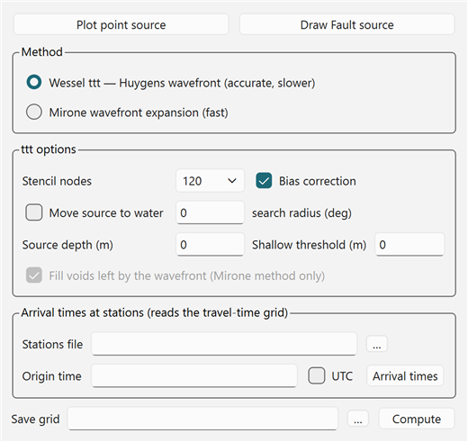
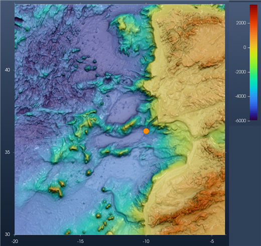
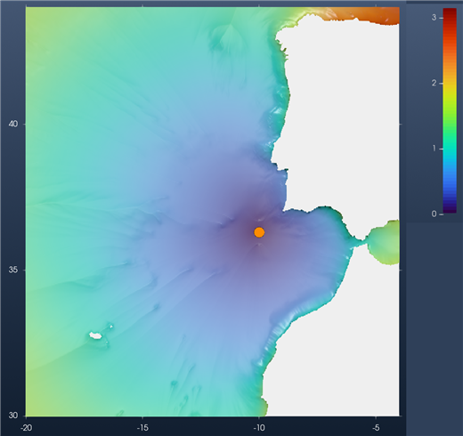
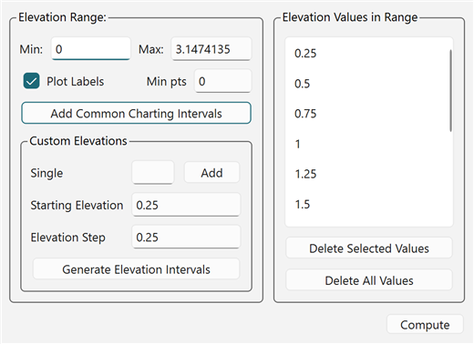
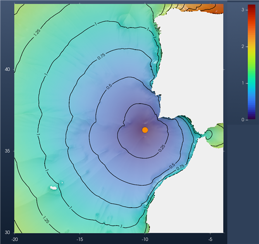
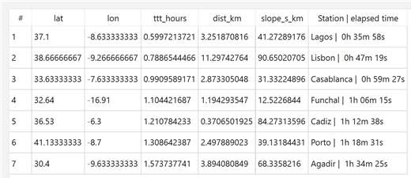
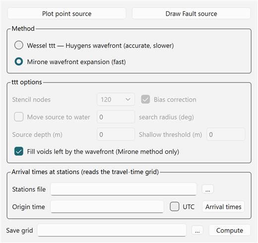
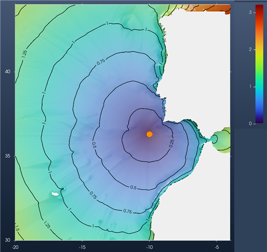

Tutorial: Tsunami Travel Times
A tsunami travel-time map shows how long a tsunami takes to get from its source to each point of the ocean. The speed of a long wave depends only on the water depth ($c = \sqrt{g\,h}$), so the map is computed from a bathymetry grid and a source. Nothing else is needed: no fault model, no simulation.
The result is a new grid, Travel time (h), in hours. This tutorial computes one for a source SW of Cape São Vicente (the region of the 1755 Lisbon earthquake), draws its isochrones every 0.25 hours (15 minutes), reads the arrival times at a few ports, and compares the two methods the tool offers.
1. Load the bathymetry
The travel times are computed on the window's bathymetry, the level 0 grid. They come back on exactly the same nodes. Any other grid in the window is ignored, even when it is the one on display: a nested grid (layer1, layer2, …) is never used. The grid must be in geographic coordinates (longitude/latitude), with ocean depths negative (metres below sea level), like the GMT @earth_relief grids.
Here the grid is @earth_relief_02m cut to -20/-4/30/44: a 481 × 421 grid at 2 arc-minutes, from Galicia to southern Morocco, with Madeira in the SW corner. From the REPL:
using GMT, InteractiveGMT
G = grdcut("@earth_relief_02m", region=(-20, -4, 30, 44))
view_grid(G)Or open the file with File → Open, or drag it onto the window. Switch the view to 2D (toolbar button) to place the source more easily.
2. Open Tsunami travel times
In the Geophysics menu, switch to the Tsunamis discipline (Geophysics › → Tsunamis), then pick Tsunami travel times….

The dialog has three parts: the source, the method, and the arrival times at stations.
3. Place the source
There is no default source. Place one with one of the two buttons at the top:
- Plot point source: click once on the map. That point is the source.
- Draw Fault source: draw a line on the map (double-click ends it). Every vertex is a point source, and so is the middle of the line. Use it for a long rupture: the waves then leave from the whole fault, not from one point.
The source is drawn as an orange circle and gets a TTT source row in Scene Objects. It can be moved like any other symbol: double-click it, then drag. Here the point is at 10.0°W, 36.3°N.

A source on a land node is refused. Tick Move source to water (Wessel method) to move it to the nearest water node, within the search radius (degrees).
4. Choose the method
| Method | What it does |
|---|---|
| Wessel ttt — Huygens wavefront | Wessel's (2009) ttt algorithm. The wavefront is expanded from each node to its neighbours with a Huygens stencil. Accurate. The default. |
| Mirone wavefront expansion | The faster expansion from Mirone. Good for a first look on a large grid. |
Options of the Wessel method:
| Option | Meaning |
|---|---|
| Stencil nodes | How many neighbours each node reaches in one step: 8, 16, 32, 48, 64 or 120. More nodes give more directions of propagation, so rounder and more accurate wavefronts, at a higher cost. 120 is the default. |
| Bias correction | The wavefront bias correction of the ttt algorithm. On by default. |
| Move source to water + search radius | See the note above. |
| Source depth (m) | The source must be at least this deep. Negative down, 0 = no constraint. |
| Shallow threshold (m) | Shallow-water depth threshold. Negative down, 0 = none. |
Fill voids left by the wavefront applies to the Mirone method only. Save grid (optional) also writes the result to a file. The result always goes to Scene Objects, with or without it.
5. Compute
Press Compute. A busy notice stays up while it runs. On this grid, the Wessel method with 120 stencil nodes took about 4 seconds.

The result is a new layer named Travel time (h), with its own axes and its own colour bar, in hours (here 0 to 3.15 h). The bathymetry (Surface) is unchecked but stays in the window. Land has no travel time and is left blank.
Already in the colours, the wave runs much faster over the deep abyssal plains to the west (blue to green) than on the shelf. It crosses the whole region westward in less than 2 hours, but needs almost 3 hours to go around Cape Finisterre into the Bay of Biscay (orange, top right).
You can move the source, change the method or the stencil, and press Compute again. The dialog stays open. The new result replaces Travel time (h), and it is always computed over the bathymetry, even while the travel times are on display.
6. Isochrones every 0.25 hours
Contour lines of the travel-time grid are isochrones: lines that the wavefront reaches at the same time. Make sure Travel time (h) is the layer on display (it is, right after Compute), then pick Grid Tools → Contours → Contour Tool….

Min and Max are read from the travel-time layer: 0 and 3.147 hours. To get a line every 0.25 hours:
- In Custom Elevations, set Starting Elevation to
0.25and Elevation Step to0.25. - Press Generate Elevation Intervals. The list on the right gets the twelve levels 0.25, 0.5, … , 3.0.
- Tick Plot Labels to write each time on its line.
- Press Compute.
The isochrones are drawn on top of the travel times, under one Contours group in Scene Objects (each level is its own row inside it). Pressing Compute again redraws the whole list and replaces the previous set.

How to read the map:
- The lines are 15 minutes apart in time. Where they are far apart, the wave is fast (deep water). Where they crowd together, it is slow (shelf, shallow banks).
- The wave reaches the Algarve in about 0.6 h, Lisbon in about 0.8 h and Madeira in about 1.1 h (see the table in step 7). Cádiz, closer than Madeira, is reached later (1.2 h): the last stretch is over the shallow shelf of the Gulf of Cádiz.
Grid Tools → Contours → Automatic contours the layer on display at round intervals chosen for you, with no dialog. Use the Contour Tool when you want a fixed interval, like 0.25 h here.
7. Arrival times at ports
The lower part of the dialog reads the arrival times off the travel-time grid at a list of stations. Write them in a text file, one per line: longitude, latitude and an optional name.
-9.14 38.69 Lisbon
-8.67 37.10 Lagos
-6.30 36.53 Cadiz
-7.62 33.61 Casablanca
-16.91 32.64 Funchal
-9.60 30.42 Agadir
-8.68 41.15 PortoEvery station must be inside the grid region. Choose the file in Stations file. Optionally set an Origin time (ISO format, e.g. 1755-11-01T09:40:00), to get clock times instead of elapsed times, and tick UTC if that time is UTC. Then press Arrival times.

The table opens in its own window, sorted by arrival time:
| Column | Meaning |
|---|---|
| lat, lon | Where the time was read. A station on a land node (a port often is, at 2′) is moved to the nearest water node, so these can differ slightly from the file. |
| ttt_hours | The travel time, in hours. |
| dist_km | Distance from the station to the node used, in km. |
| slopeskm | Travel-time gradient at the station, in s/km. |
| Station | elapsed time | The station name from the file, and the arrival time written as hours, minutes and seconds. With an Origin time, the column is Station | arrival time and shows the clock time. |
Here the wave reaches Lagos first (36 min), then Lisbon (47 min), Casablanca (59 min), Funchal (1 h 06 min), Cádiz (1 h 13 min), Porto (1 h 19 min) and Agadir (1 h 34 min). Save… writes the table, names included, to a tab-separated text file.
The arrival times are read off whatever travel-time grid is on display, whichever method made it. They work the same way with the Mirone method below.
8. The other method: Mirone
Now compute the same source with the second method. In the dialog, select Mirone wavefront expansion (fast). The ttt options gray out, except Fill voids left by the wavefront, which belongs to this method. Leave it ticked: it fills the few water nodes the expansion can skip.

The source does not need to be placed again: it is still on the map. Press Compute. The new grid replaces Travel time (h). The isochrones do not follow by themselves: press Compute in the Contour Tool again (its list of 0.25 h levels is still there) to trace them on the new grid.

The two maps are very close. Side by side:
| Wessel ttt (120 nodes) | Mirone | |
|---|---|---|
| Compute time, this grid | about 4.5 s | about 0.6 s |
| Largest travel time | 3.15 h | 3.21 h |
| Lagos | 0h 35m 58s | 0h 36m 40s |
| Lisbon | 0h 47m 19s | 0h 45m 23s |
| Casablanca | 0h 59m 27s | 0h 59m 28s |
| Funchal | 1h 06m 15s | 1h 06m 50s |
| Cádiz | 1h 12m 38s | 1h 12m 04s |
| Porto | 1h 18m 31s | 1h 26m 05s |
| Agadir | 1h 34m 25s | 1h 36m 01s |
Most arrivals agree within a minute or two. The biggest difference is at Porto, about 8 minutes. The Mirone method is several times faster, so use it to try sources quickly, and the Wessel method for the final map.
The map says when the first wave arrives, not how big it is. For wave heights, run a tsunami simulation: see Running NSWING and Virtual Tide Gauges.